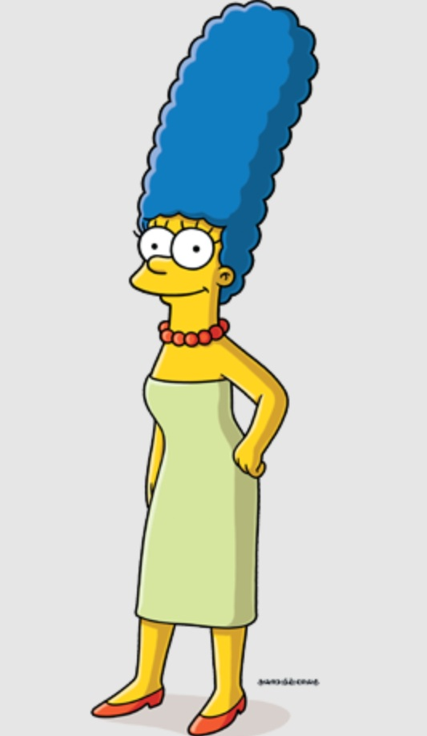
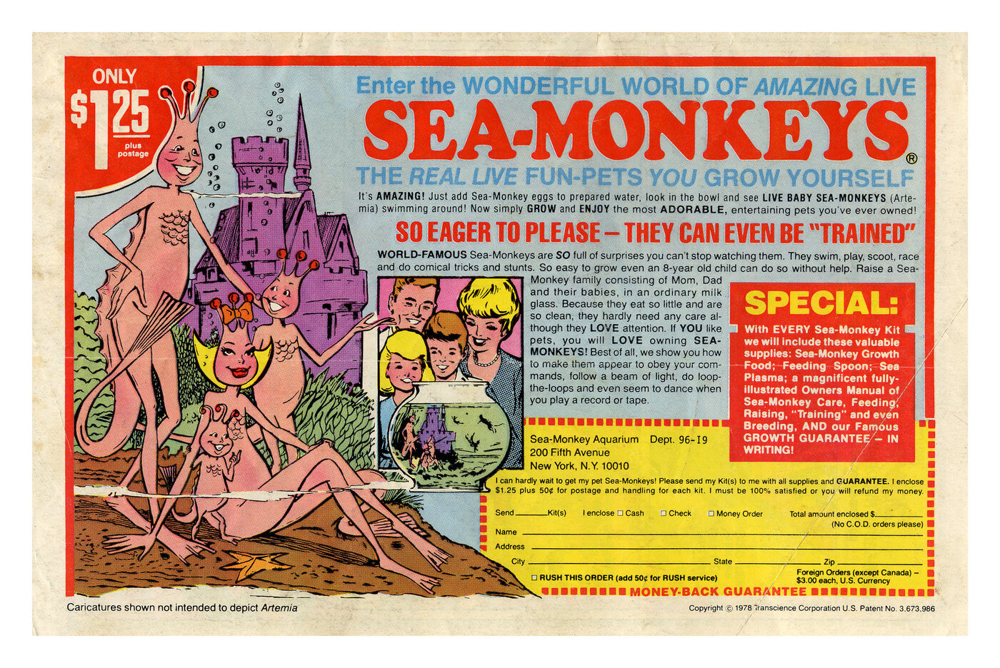
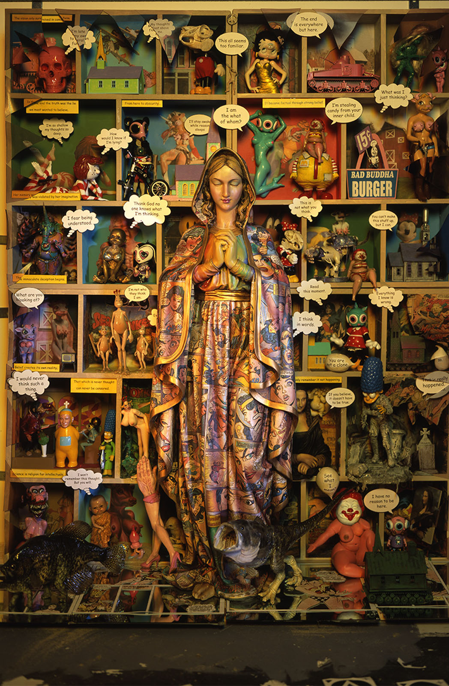
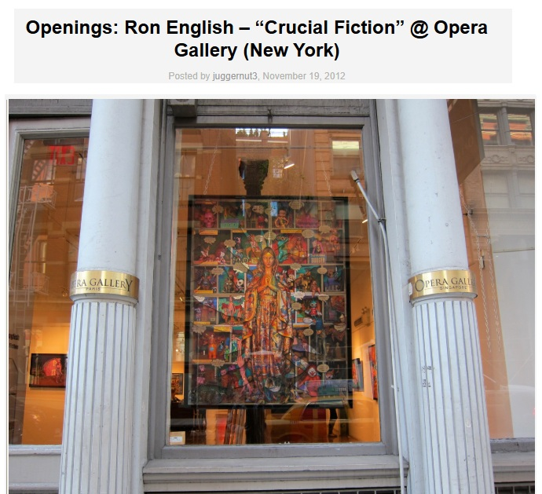
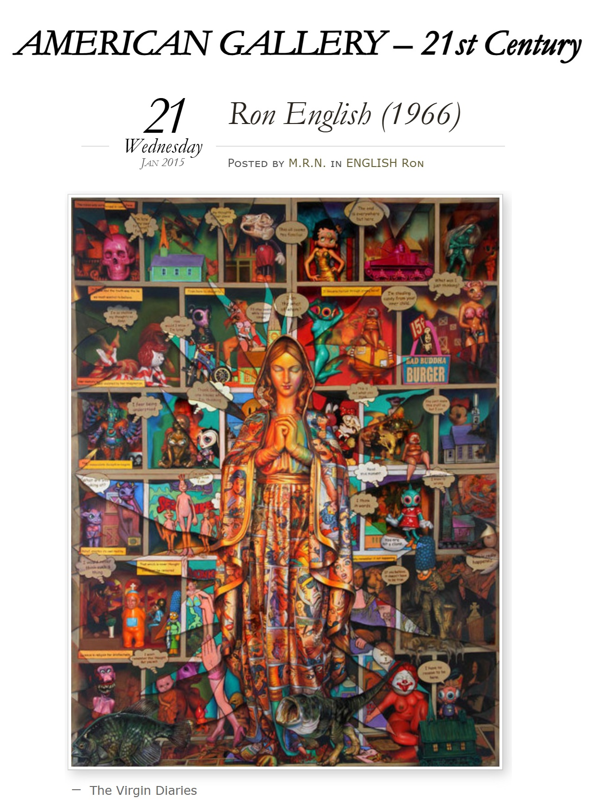

Exhibitions
Crucial Fiction, Opera Gallery, New York, New York, US, November 1–29, 2012.
Crucial Fiction, Opera Gallery, New York, New York, US, November 1–29, 2012.
Literature
Ron English, Status Factory: The Art of Ron English (San Francisco: Last Gasp of San Francisco, 2014), p. 171. ISBN 978-0867197891.

Ron English, Fauxlosophy: The Art of Ron English (San Francisco: Last Gasp, 2016), p. 130. ISBN 978-0867196566.

Ron English, Original Grin: The Art of Ron English (Paris: Cernunnos, 2019), p. 253. ISBN 978-2374950938.

“Preview: Ron English "Crucial Fiction" @ Opera Gallery, NYC”, Juxtapoz, no. November, 2012.

Filgueiras, Mariana, “Ron English – Arte da Contestação”, O Globo, October 21, 2014.

Notes
Ron English assembled and photographed a reference set as a model for this work.
Ancillary Documentation








Selected Online Circulation
Selected examples of the work’s online circulation, reproduction, or discussion. This list is not exhaustive; it is intended to document representative appearances of the image beyond formal exhibition and publication records.